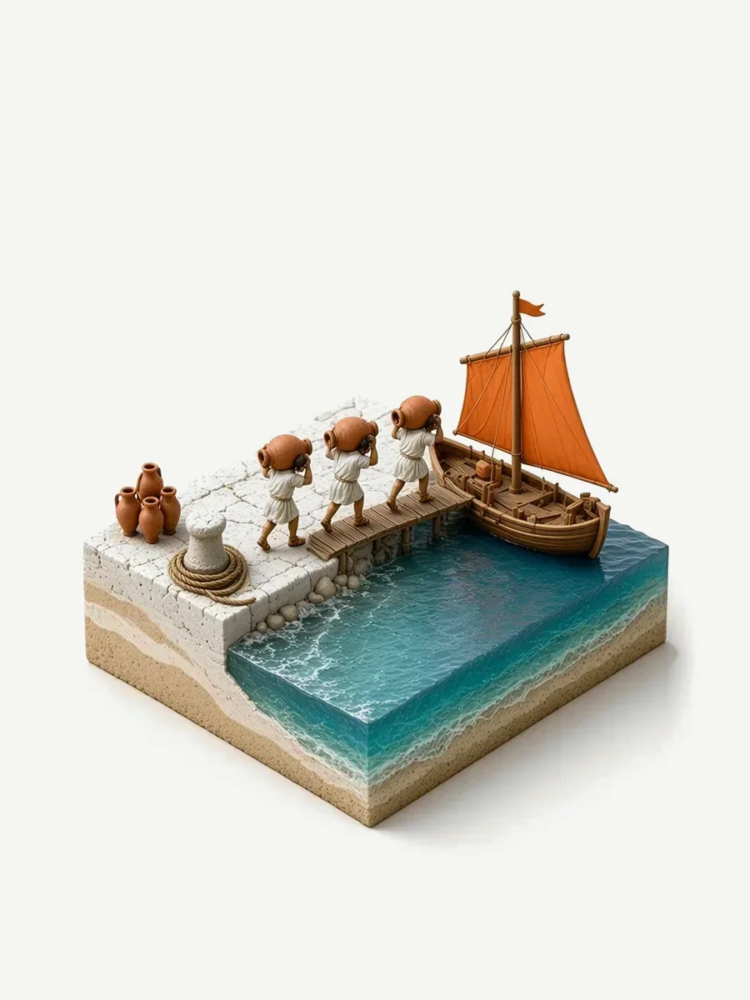
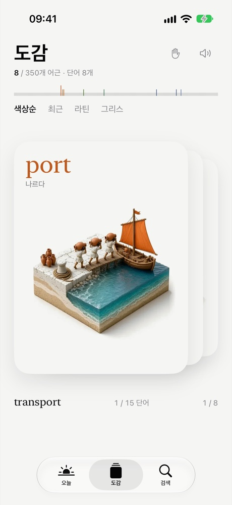

그림으로 보는 영단어 어원 도감
어근 하나하나에, 이야기를 담은 미니어처.
익숙한 단어에서 미처 몰랐던 연결을 발견해 보세요. 발견한 어근은 작은 이야기와 함께 나만의 도감에 담을 수 있어요.


발견할수록 채워지는 나만의 도감
하루에 하나씩 새로운 어근을 만나고, 미니어처를 살펴보고, 같은 어근을 가진 단어를 따라가 보세요. Rhiza에서는 발견한 어근을 나만의 도감에 모을 수 있어요. 라틴어와 그리스어에서 온 어근 350개마다 그 유래를 담은 미니어처가 하나씩 있습니다.
영단어 4,900개 이상. 한국어 지원. 계정이나 광고 없이 오프라인에서 쓸 수 있는 일회 구매형 아이폰 앱입니다.
App Store에서 보기